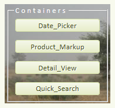
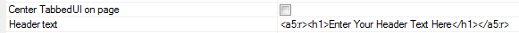

Introducing the Tabbed UI Builder
- Overview
- Finding the Tabbed UI Builder
- Page Menu
- Getting Started
- Tabbed UI Controls
- Tabbed UI Controls Toolbar Functions
- Tabbed UI Buttons Toolbox
- Containers Toolbox
- Tab Controls and Tab Panes
- Frames
- Tree Controls
- Creating a Tabbed UI with two tree controls
- Other Controls Toolbox
- Tabbed UI Properties
- Using Javascript Functions with Tabbed UI
- Using Xbasic Functions with Tabbed UI
- Using Server-side Events with Tabbed UI
- Implementing Parameters for Reports
- Multiple Language Support in Tabbed UI
- Using a Page Layout for Tabbed UI Buttons
Overview
|
Finding the Tabbed UI Builder:
1. In the Web Projects Control
Panel click the New Component or File
button
 .
.
2. The New File dialog will open. Select Web Component and click Next >.
3. Select Tabbed UI Builder and click Next >.
|
Menu | Description |
Overview | Basic description of the Tabbed UI builder. |
| Tabbed UI Controls | Define the controls users will use to navigate your user interface. |
| Tabbed UI Properties | Define the properties of your user interface |
| Javascript Functions | |
| Xbasic Functions | |
| Server-side Events | |
| Client-side Events | |
| Information | Allows you to record information about the Tabbed UI |
Getting Started:
|
1. On the Design tab and select the 'Tabbed UI Controls' pane, then open the 'Tabbed UI Buttons' section in the toolbox.
2. Add objects(Grids, Reports, A5W pages, HTML Pages, External Web Pages, and PDF Documents). Each object you add puts a new button in the 'Buttons Panel'
3. You can control the formatting of the buttons in the 'Buttons Panel' by selecting objects from the 'Containers' and 'Other Controls' section of the toolbox. For example, you can organize your buttons into Tabs, and Accordions. You can put frames around similar buttons to group them together, and you can put static HTML and images on the Buttons Panel to enhance its appearance.

4. Select the 'Tabbed UI Properties' section to define the top banner of your Tabbed UI, to define the contents of your home page, and to define other properties of the object.
|
Tabbed UI Controls Toolbar Functions
| Delete all objects |
|
|
| Delete selected objects |
|
|
| Move to top |
|
|
| Move up one row |
|
|
| Move down one row |
|
|
| Move to bottom |
|
|
| Move to a specified location |
|
|
|
|
Eye dropper |
|
| Find a control |
|
|
| Toggle Break |
|
|
| Menu |
|
|
| Promote |
|
|
| Demote |
|
|
- Open the Tabbed UI Builder. Go to Design and open the Tabbed UI Controls page.
- In the Tabbed UI Button toolbox, click on the icons and add multiple Buttons to your tabbed UI.
- Highlight one of these buttons. On the Tabbed UI
Controls page there should be a Properties
list on the right.
- In the Properties list find Tabbed UI
Button/Hyperlink Properties and underneath it find the
Style property.
- Click the button next to the Style property. This will open the Style Editor.
- In the Style Editor, scroll through the Property tab until you find
Width under the Positioning and Size properties
- Click the button
next to
Width. Set the Width to 2in in the
Size dialog and then click
OK. Click OK
again to close the Style Editor.
- Click the 'Eye dropper'
 icon. The
Select Controls dialog will open showing the
selected property for all of the controls in the component.
icon. The
Select Controls dialog will open showing the
selected property for all of the controls in the component. - Select the control(s) to which you want to paste the property by clicking on them. Hold down Shift and click to select more than one control.
-
Click Set Properties and you are done.
Width Setting
1.5 inch Tabbed UI
Select the controls you want to paste the 2 inch property on to.
Final 2 inch Tabbed UI
|
| Recalculate selected controls. |
|
| Recalculate all controls. |
|
| Copy controls to Clipboard |
|
| Paste controls from Clipboard |
|
| Select all controls in current container |
|
| Go to control number |
|
| Show current control number |
|
| Move Javascript Code to different event |
|
| Internationalization Utilities |
|
| Create Static HTML Files |
|
| Security and Server-side show/hide settings in component |
|
| Show the value of the selected property in a controls |
|
Tabbed UI Buttons Toolbox
| Component |
|
|
| Record |
|
|
| A5W Page |
|
|
| HTML Page |
|
|
| External Web Page |
|
|
| PDF Document |
|
|
Procedure:
1. Go to the Design page of the Tabbed UI Builder and open the Tabbed UI Controls page.
2. Open the Tabbed UI Buttons toolbox and click on the PDF Document button .
3. The Insert Tabbed UI Pane dialog will load. Any loaded PDF Document should appear in the Object Name: list.
5. If the Object Name box is empty click on the 'Copy PDF Document into Web Project Folder' button at the bottom of the dialog.
6. This will open the Add PDF File to Project dialog, specify the Source filename: and click OK.
7. Then click OK to close the Insert Tabbed UI Pane dialog.
8. Go over to the Properties on the Tabbed UI Controls page.
9. Scroll down to the PDF Document properties and click the button next to PDF open parameters.
10. This will open the PDF Open Parameters dialog. Change the parameters to fit your liking. Page Number will open the PDF on a given page.
11. Click OK to close the PDF Open Parameters dialog and click Save.
12. Go to Live Preview and click Full Preview to see the results.
Containers Toolbox
| [Tab Control] |
|
|
| [Tab Pane] |
|
|
| [Frame] |
|
|
| [Container] |
|
|
| [Tree Control] |
|
|
|
|
[Tree Branch] |
|
|
Create a Tab Control
1. In the Tabbed UI Builder's Design tab, open the Tabbed UI Controls page.
2. Open the Tabbed UI Buttons toolbox and add a number of Buttons to your user interface.
3. Highlight a group of 4 to 5 buttons.
3. Click on the Containers toolbox in the Tabbed UI Controls page. With the 4 to 5 buttons still selected click [Tab Control].
4. The Insert Tab Control dialog will open.
5. Check the Insert the opening [Tab Control] tag? option
6. Click the Display as: Tab control radio button.
7. In the box titled 'Enter a list of tab pane titles (one per line)' enter the names of the tab pane controls you want to use inside the [Tab Control].
8. Check the 'Insert the closing [Tab Control End] tag?' box and click Insert Around.
9. You should now see the [Tab Control] grouped around the buttons you highlighted in step 3.
10. If a tab pane is empty click a button control and use the arrows in the toolbar (, , ,) to move buttons into the [Tab Pane].
11. Go to the Working Preview to see the [Tab Control] in operation.
[TabPane:Product Info]
[TabPane: Shipping Dates]
|
Implement a Tab Control Animation:
1. First Create a [Tab Control] with two [Tab Pane] controls inside it. Place some buttons in the tab panes.
2. On the Tabbed UI Controls page click on the new [Tab Control] to highlight it. Then look over at the Properties list on the right side of the same page.
3. Under Tab/Accordion Control Properties check the Animation property. Additional properties should open up that will let you adjust the show and hide animation speeds of tab controls.
Watch Video
Watch Video
JQuery Support
|
Create a Frame
1. In the Tabbed UI Builder's Design tab, open the Tabbed UI Controls page.
2. Open the Tabbed UI Buttons toolbox and add a number of Buttons to your user interface, around 8.
3. Highlight a 4 buttons that you want to place inside a frame.
4. Open the Containers toolbox inside the Tabbed UI Controls page and click on the [Frame] control.
5. The Insert Frame dialog will open. Leave the [Frame Begin] and [Frame End] checkboxes checked, fill in a Frame label, and click OK.
6. The Frame control will be inserted around the buttons you selected...
5. Go to Working Preview. You should now be able to see the frame...
A Frame control
|

A Frame with an Image background
Tree Controls
A Tree Control UI with Branches
|
Create a Tree Control
1. In the Tabbed UI Builder's Design tab, open the Tabbed UI Controls page.
2. Open the Tabbed UI Buttons toolbox and add a number of Buttons to your user interface.
3. Highlight a group of buttons. Then go to the Containers toolbox and, with the buttons highlighted, click [Tree Control].
4. The Insert Tree Control dialog will open. Check the 'Insert the opening [Tree Control] tag?' option and the 'Insert the closing [Tree Control End] tag?' option.
5. Click OK. The [Tree Control] should now look something like this in the Design view...
6. Go to Working Preview to see you tree control. Without branches the [Tree Control] should appear similar to this...
7. Go to the Design tab in the Tabbed UI Builder and open the Tabbed UI Controls page where you created your [Tree Control].
8. Select a Button from your Tabbed UI list and then open the Containers toolbox.
9. Click on the [Tree Branch] control option in containers.
10. The Insert Tree Branch Dialog will open. Select a name for your new tree branch and click OK.
11. Now select a second Button in your Tabbed UI tree. Go to the Containers toolbox and add another [Tree Branch] control to your tree.
|
12. Go to Working Preview, you should now see branches in your tree...
Closed Branches
Open Branches
13. To create or eliminate nested branches on your tree go to Design view and open the Tabbed UI Controls page.
14. Select one of the Tree Branches that you created. In this example a branch named 'Suppliers' is selected.
15. To move a nested branch, like 'Suppliers', to the same level as a branch above it, click the Promote entry button in the Design toolbar.
16. In this example, this will change the structure of the tree to look like this....
Branches no longer nested
|
17. In Working Preview this structure will produce something like this...
Closed Branches
Open Branches
Tree Control and Tree Branch Properties
|
Creating a Tabbed UI with two tree controls
1. Go to the Tabbed UI Controls page in Design and open the Tabbed UI Buttons toolbox.
2. Add a number of buttons, at least 8, to the user interface from your existing components, records, A5W pages, ect...
3. Highlight the first four buttons, open the Containers toolbox, and click on [Tree Control].
4. Click OK in the dialog that opens to
add the tree control tags around the four buttons.
5. Highlight the last four buttons in your user interface and add a second tree control.
6. If you want, add [Tree Branch] controls inside of your tree controls. Use the arrow keys , , , to move the branches into place. Also use the Promote entry and Demote entry keys to nest branches as you would like them to be nested.
7. Now select everything in the Tabbed UI; all of the buttons, tree controls, and tree branches. Simply click on the first control in your list, hold down the Shift key, and select the last control in your list.
8. Go to the Containers toolbox and click on [Tab Control]. The Insert Tab Control dialog will open. Add two [Tab Pane] titles to the pane title textbox and click OK.
9. Move the [Tab Pane] controls so that each
tab pane is placed above a [Tree Control] on
your Tabbed UI.
10. Finished! Now go to Working Preview or Live Preview and see how the
Tabbed UI with two tree controls looks...
| [Static Text] |
|
|
| [Image] |
|
|
| [Button] |
|
|
| [Hyperlink] |
|
|
| [IFrame] |
|
|
|
|
[Spacer] |
|
Placing Controls Side by Side
|
Add an Image to your Project and Tabbed UI
1. In the Tabbed UI Builder under the Design tab open the Tabbed UI Controls page.
2. Open the Other Controls Toolbox and click on [Image] to add an image control to your user interface.
3. Use the arrow buttons , , , to move the image to where you want it to be in the Tabbed UI Panel.
A Simple [Image] control added to the Tabbed UI menu.
4. In the Properties list, on the Tabbed UI Buttons page, find the Image Properties section.
5. Click the button next to the Image name property.
6. The Specify Image dialog will load. Click the Image in Web Project or Style radio button and hit Select.
7. In the Dropdown menu choose Select from Web Project Folder.
8. The Select Image dialog will
open. Click the Add Image to Project button.
9. The Add Image to Project dialog will open. Click the up button next to the Source filename: textbox. Navigate to the image you want to add and add it.
10. Click OK to close the Add Image to Project
dialog.
11. Now in the Select Image dialog again, Adjust the height of your image and how you want it to fit on the screen using the Preview and Size Panels.
12. Click OK and OK again. Now go to Live Preview and see how the image control looks.
The same control in Live Preview
|
Optimize a Tabbed UI for a Mobile Device
1. Build a simple Tabbed UI component or open an existing Tabbed UI Component in the Web Projects Control Panel. For example,
2. In the Tabbed UI Builder open the Tabbed UI Properties page. Under the Tabbed UI Properties list find Layout mode (Desktop or Mobile).
3. Click the dropdown in the Layout mode (Desktop or Mobile) property and change it to MobileDevice.
4. Under Tabbed UI Properties find the Style name property and click the button next to it to open the Select Style Editor.
5. In the Select Style Editor click on System in the Location menu.
6. This should open a range of styles. Choose a mobile style (prefixed with Mob), like MobBlue or MobOlive
|
7. Now go to Live Preview, Run a Full Preview and then run the Tabbed UI in a Browser window. Scale the browser window down to the size of a tablet.
Tabbed UI Component Menu as a 'Mobile Device'
Component in the Tabbed UI Menu
|
NoScript Property
|
Using Javascript with Tabbed UI
|
An Edit Event dialog opens when you want to edit an event.

The Javascript Functions editor.
Using Xbasic Functions with Tabbed UI
|

The Xbasic Function Editor
Using Server-side Events with Tabbed UI
|
The Server Side events editor
Additional Features
|
Implementing Parameters for Reports
|
Creating a Prompt from a Dynamically Generated List
1. Using AlphaSports workspace go to the Design page of the Tabbed UI Builder and open the Tabbed UI Controls page.
2. Open the Tabbed UI Buttons toolbox and add these the Customer List to your Tabbed UI Component.
3. In the Properties list on the Tabbed UI Controls page scroll down to Report Definition and click the button next to the Report name property.
4. This will open the Report Print Genie. Click the Define Argument button.
5. This will open the Define/Edit Arguments dialog. Click Add.
6. The Add Argument dialog will load. Give the argument a name like 'whatstate' and set the Type to 'Character'. Click OK.
7. Back in the Define/Edit Arguments dialog, change the Prompt: to something like 'State Name'.
8. Click on the Dropdown list next to Style: and change it to a Combo box. Click the Define Choices button that becomes active.
9. This will open the Define Choices dialog. Click the Define/Edit Dynamic Choices button.
|
11. The Define Dynamic Choices dialog will load. Under Type select DBF.
|
12. Click the button next to Tablename. Select the customer.dbf file in Alpha Anywhere from the Select Table dialog.
13. Click the dropdown button next to the Displayed Value setting and select Bill_State_Region field.
14. Click the Preview choices button at the
bottom of the Define Dynamic Choices dialog to
see that the dynamically generated choices are correct.
15. Click OK, and
OK, and OK again to
bring you back to the Report Genie dialog.
16. In the Set Argument Values list at the bottom of the dialog click on the argument you defined, in this case 'whatstate'. Click the Set Argument Value button.
17. The Set Argument Value dialog will load. Under the Argument Value: textbox, click the Insert Field Placeholder button and click <Prompt at Run-time>.
19. Click OK. Returning to the Report Genie dialog, click the Build button next to the 'Filter:' textbox.
20. The Filter Builder will open. From the fields list select the bill_state_region field and from the comparison list select 'is equal to'.
21. Click the up button to load the Value dialog. Check the Select an argument value radio button and highlight ':whatstate(Character)'
22. Click OK, OK, OK, and Save.
23. Go to Live Preview and click the customer list tab. You should see the prompt for the state name that was created from the dynamically generated table. Select a state and click Print Report. You should see the data change to reflect every state.
|
Multiple Language Support in Tabbed UI
|
Creating Multiple Language Support
1. Open the Tabbed UI Builder, go to Design, and open the Tabbed UI Controls page.
2. Open the Tabbed UI Buttons toolbox and add some number of buttons, 3 or 4, to your Tabbed UI.
3. Click on one of the Buttons you defined. Still on the Tabbed UI Controls page, Go over to the Properties list for that button,
4. Find the Button text property. Place <a5:r> </a5:r> tags around the text.
5. Repeat this procedure for each button in your Tabbed UI. Place <a5:r></a5:r> tags around each Button's Button text property.
6. Go to the Tabbed UI Properties page.
7. Under the Tabbed UI Properties list, find the
Header text property. Put <a5:r></a5:r>
tags around the "<h1>Enter Your Header Text Here</h1>"
text.

8. Still in the Tabbed UI Properties, scroll down to the section marked Other and find the Language Definitions property.
9. Click the button next to Language Definitions to open the Language Definitions dialog.

10. In the Language Definitions dialog press Refresh List of Placeholders button, You should see all of the buttons and the Header text that you tagged appear in the dialog.
11. Your <Default> language is highlighted. Assign the default
language values for each button in the list. For example '<h1>Enter Your Header Text<h1>=Heading1'

Assigning Values to the Default Language
The <Default> Language in Working Preview
12. Click the Add Language button on the Language Definitions dialog. Add the new languages name, in this example 'New Language', and click OK.

13. Now click Refresh List of Placeholders button again and assign values to the language you added. For example, '<h1>Enter Your Header Text<h1>=New Heading1'
14. In Tabbed UI Properties page in the Other section find the Active language property. Set the active language to be the language you added, in this case 'New Language'
|
15. Now go to Working Preview. You should see all of the new language values appear on your Tabbed UI Controls.
New Language Tabbed UI
Using a Page Layout for Tabbed UI Buttons
|
Creating a Page Layout for use in a Tabbed UI
1. In the Web Projects Control Panel click
on the New component or file
 button in the toolbar.
button in the toolbar.
2. The New File dialog will open. Select Web Component and click Next >.
3. Click on the Page Layout Builder option. Click Next >.
4. The Page Layout Builder will open. Go to the Design Tab and in the menu click on Page Layout Parts page.
5. On the Page Layout Parts page open the Page Layout Parts toolbox.
6. Add some parts, say 6 parts, to your page by clicking on the Component, Report, A5W Page, HTML Page, External Web Page, or PDF Document buttons the same way you would with a Tabbed UI. Simply select the thing you want to add and click OK.
7. Select the first three parts and open the Containers toolbox. Click on the [Frame] Control. Give the Frame a name, in this case the name is 'Components'
8. Select the remaining parts in your Page Layout and add a second [Frame] control around them.
9. Click on the first Page Layout Part, in this case Date_Picker. On the Page Layout Parts page go to the Properties list.
10. Under Embedded Object Properties find the Show mode property. From the dropdown select 'When button is clicked'.
11. Repeat step 10, changing the Show mode property in all of your remaining Page Layout Parts to 'When button is clicked'.
12. In the Page Layout Parts page Properties menu find Window Properties and under it the Window type property.
|
13. From the Window type dropdown select 'Tabbed UI Pane' option for all of your Page Layout Parts.
14. Save your Page Layout Component with a name, say Pagelayout, and close the Page Layout Builder.
|
Convert a Page Layout into an A5W page
15. In the Web Projects Control Panel click on the New component or file button again. This time choose the A5W Page option. Click Next >.
16. Select Blank Page and Click Next >. When the HTML Editor opens for the A5W Page, go to File and Save the file as pl_menu_page.a5w.
17. Now click the Insert Component button in the toolbar. The Insert Component dialog will open.
18. Hit the Select button and from the Select Component dialog that opens choose the Page Layout component you saved in step 14, in this case it was saved as Pagelayout. Then click OK.

19. Click OK again to close the Insert Component dialog. Then click File and Save and close the HTML editor.
Use the Page Layout in a Tabbed UI Page
20. In the Web Projects Control Panel click on the New component or file button. Select Web Component and click Next >.
21. Select a Tabbed UI Builder and click Next > to open the Tabbed UI Builder.
22. In the Design tab, go to the Tabbed UI Controls page, and open the Other Controls toolbox.
23. Add a [Static Text] control. require at least one control in the tabbed UI.
|
24. Go to the Tabbed UI Properties page. In the Tabbed UI Properties list find the Button panels style property.
25. Set the Button panels style property to display:none; This way the button panel will not be visible.
26. Under the Home Page properties find the
Home Page HTML source dropdown. Select
URL.
27. The Home page URL property will become
visible. Set the URL to pl_menu_page.a5w. This is the a5w page that
contains the page layout component you defined.
28. Now go to Live Preview and click Full Preview. You should see a Page Layout a Tabbed UI.
The Home Page Tab
A Tab without a Tab menu